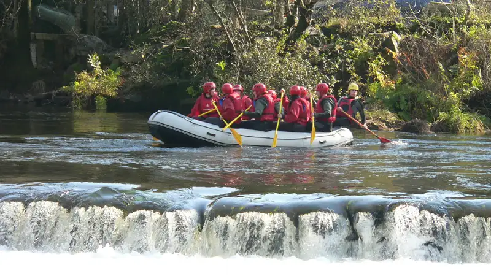

Rafting Kasembon adalah aktivitas arung jeram di Sungai Konto, Kecamatan Kasembon, Kabupaten Malang, yang menyusuri jeram kelas dua hingga tiga sepanjang belasan kilometer dan cocok untuk pemula maupun keluarga.
- Rafting Kasembon berlokasi di Sungai Konto, perbatasan Kasembon dan Pujon, sekitar 1-1,5 jam dari pusat Kota Malang.
- Rute umumnya menempuh jarak sekitar 12-13 kilometer dengan durasi tempuh dua hingga tiga jam.
- Tingkat kesulitan jeram tergolong kelas dua sampai tiga, relatif aman untuk pemula yang didampingi pemandu.
- Paket biasanya sudah mencakup perlengkapan keselamatan, pemandu, dan asuransi dasar.
- Musim hujan membuat debit air lebih tinggi sehingga arus terasa lebih menantang dibanding musim kemarau.
Apa Itu Rafting Kasembon?
Rafting Kasembon adalah kegiatan arung jeram komersial di Sungai Konto yang dikelola oleh beberapa operator wisata di kawasan Kasembon dan Pujon, Kabupaten Malang.
Aktivitas ini memanfaatkan aliran Sungai Konto yang berhulu di kawasan pegunungan sekitar Pujon dan mengalir melewati Kasembon sebelum bermuara ke wilayah hilir. Karakter sungainya berbatu dengan jeram-jeram kecil hingga menengah yang berselang-seling dengan bagian arus tenang, sehingga menciptakan pengalaman yang memacu adrenalin namun tetap terkendali bagi peserta yang belum berpengalaman.
Rafting Kasembon menjadi salah satu daya tarik wisata petualangan di Malang selatan-barat karena aksesnya yang relatif dekat dari Kota Malang maupun Kota Batu, serta kondisi sungai yang dianggap ramah untuk peserta pemula dibandingkan beberapa sungai lain di Jawa Timur yang jeramnya lebih ekstrem.
Mengapa Rafting Kasembon Populer di Kalangan Wisatawan Malang?
Rafting Kasembon populer karena kombinasi rute yang menantang namun aman, akses lokasi yang mudah dijangkau, dan paket wisata yang lengkap dengan pemandu berpengalaman.
Beberapa faktor yang mendorong popularitas rafting Kasembon antara lain:
- Jarak tempuh dari Kota Malang maupun Kota Batu yang tidak terlalu jauh, sehingga bisa menjadi agenda wisata satu hari.
- Pemandangan alam sepanjang aliran Sungai Konto yang masih dikelilingi perbukitan dan area perkebunan, memberikan nuansa petualangan sekaligus wisata alam.
- Paket rafting yang umumnya sudah termasuk perlengkapan standar seperti helm, pelampung, dan dayung, sehingga peserta tidak perlu membawa peralatan sendiri.
- Reputasi Kasembon sebagai salah satu titik arung jeram rintisan di Malang yang sudah beroperasi cukup lama dibandingkan beberapa lokasi rafting baru di sekitarnya.
- Kedekatan dengan destinasi wisata lain di jalur Malang-Kediri, seperti kawasan Coban Rondo dan Pujon, yang memudahkan wisatawan menyusun itinerary gabungan.
Bagaimana Rute dan Karakter Jeram di Sungai Konto Kasembon?
Rute rafting Kasembon menyusuri Sungai Konto sepanjang sekitar 12-13 kilometer dengan kombinasi jeram kelas dua dan tiga yang diselingi jalur tenang untuk pemulihan napas peserta.
Secara umum, rute arung jeram di Kasembon terbagi menjadi beberapa segmen dengan karakter berbeda. Pada bagian awal, arus cenderung lebih tenang untuk memberikan waktu peserta beradaptasi dengan perahu dan teknik dayung dasar. Memasuki segmen tengah, jeram mulai lebih rapat dengan bebatuan yang membentuk arus deras dan beberapa titik yang memerlukan koordinasi tim lebih baik. Pada segmen akhir, arus biasanya kembali melambat sebelum titik finis, memberikan kesempatan bagi peserta menikmati pemandangan sekitar sungai.
Tingkat kesulitan jeram kelas dua hingga tiga tergolong menengah dalam skala internasional arung jeram, yang berarti masih dapat diikuti pemula dengan pengawasan pemandu berpengalaman, namun tetap memerlukan kewaspadaan terhadap arus dan bebatuan di sepanjang jalur.
Berapa Kisaran Biaya Rafting Kasembon?
Biaya rafting Kasembon umumnya dihitung per orang dan sudah mencakup perlengkapan keselamatan, pemandu, serta dokumentasi dasar, dengan besaran yang dapat bervariasi antar operator dan musim.
Beberapa komponen yang lazim memengaruhi harga paket rafting Kasembon meliputi:
- Jarak rute yang dipilih, karena sebagian operator menawarkan opsi rute pendek dan rute penuh dengan tarif berbeda.
- Jumlah peserta dalam satu grup, karena beberapa operator menerapkan harga khusus untuk rombongan besar seperti keluarga, komunitas, atau perusahaan.
- Fasilitas tambahan seperti transportasi antar-jemput, makan siang, atau paket dokumentasi foto dan video profesional.
- Musim kunjungan, karena periode liburan sekolah dan akhir tahun cenderung memiliki permintaan lebih tinggi dibandingkan hari biasa.
Untuk mendapatkan gambaran harga yang akurat dan terkini, calon peserta disarankan menghubungi langsung operator rafting Kasembon yang dipilih, karena tarif dapat berubah sewaktu-waktu mengikuti kebijakan masing-masing pengelola.
Kapan Waktu Terbaik untuk Rafting Kasembon?
Waktu terbaik untuk rafting Kasembon umumnya berada di pagi hingga siang hari sepanjang musim kemarau, ketika debit air lebih stabil dan cuaca cenderung lebih cerah.
Pada musim kemarau, sekitar bulan April hingga Oktober, debit Sungai Konto cenderung lebih rendah dan stabil sehingga kondisi arus lebih dapat diprediksi. Sebaliknya, pada musim hujan, debit air dapat meningkat signifikan dalam waktu singkat setelah hujan deras di kawasan hulu, yang membuat arus menjadi lebih deras namun juga lebih berisiko bagi peserta pemula.
Sebagian operator rafting Kasembon menetapkan kebijakan penundaan atau pembatalan sementara ketika debit air dinilai terlalu tinggi demi alasan keselamatan. Oleh karena itu, calon peserta disarankan mengecek kondisi cuaca dan berkoordinasi dengan operator sebelum menentukan jadwal kunjungan, terutama pada musim penghujan.
Apa yang Perlu Dipersiapkan Sebelum Rafting Kasembon?
Persiapan utama sebelum rafting Kasembon meliputi kondisi fisik yang sehat, pakaian yang sesuai, serta kesediaan mengikuti briefing keselamatan dari pemandu sebelum turun ke sungai.
Beberapa hal yang umumnya perlu diperhatikan peserta antara lain:
- Mengenakan pakaian yang cepat kering dan nyaman digunakan basah, serta menghindari perhiasan atau barang berharga yang mudah hilang di air.
- Membawa pakaian ganti dan handuk untuk digunakan setelah kegiatan selesai.
- Memastikan kondisi kesehatan dalam keadaan baik, terutama bagi peserta dengan riwayat gangguan jantung atau pernapasan, dan berkonsultasi dengan dokter bila memiliki kondisi tertentu.
- Mengikuti seluruh briefing keselamatan dari pemandu sebelum memulai rafting, termasuk teknik dayung dasar dan prosedur jika perahu terbalik.
- Menyimpan barang elektronik seperti ponsel di tempat yang telah disediakan operator, bukan dibawa langsung ke atas perahu.
Apa Kesalahan Umum yang Sering Dilakukan Peserta Rafting Kasembon?
Kesalahan umum peserta rafting Kasembon antara lain mengabaikan instruksi pemandu, memilih waktu kunjungan saat cuaca ekstrem, dan tidak mempersiapkan kondisi fisik sebelum kegiatan.
Beberapa kesalahan yang sebaiknya dihindari meliputi:
- Tidak menyimak briefing keselamatan dengan serius karena menganggap arung jeram sekadar aktivitas rekreasi biasa.
- Memaksakan diri mengikuti rafting saat kondisi tubuh kurang fit, misalnya dalam keadaan sakit atau kelelahan.
- Memilih memakai sandal jepit atau alas kaki yang mudah lepas, padahal alas kaki tertutup lebih disarankan untuk melindungi kaki dari bebatuan sungai.
- Tidak mengikuti instruksi posisi duduk dan cara berpegangan yang benar di dalam perahu, sehingga meningkatkan risiko terjatuh saat melewati jeram.
- Mengabaikan peringatan operator terkait kondisi debit air tinggi akibat hujan di kawasan hulu.
Perbandingan Rafting Kasembon dengan Lokasi Arung Jeram Lain di Malang
Rafting Kasembon umumnya dianggap memiliki karakter jeram yang relatif ramah pemula dibandingkan beberapa lokasi arung jeram lain di Malang yang menawarkan rute lebih panjang atau jeram lebih ekstrem.
Malang memiliki beberapa titik arung jeram selain Kasembon, masing-masing dengan karakter sungai dan segmen rute yang berbeda. Perbedaan ini biasanya terletak pada panjang rute, jumlah titik jeram, serta tingkat kesulitan arus. Wisatawan yang baru pertama kali mencoba arung jeram umumnya disarankan memilih lokasi dengan jeram kelas dua hingga tiga seperti Kasembon, sementara peserta yang sudah berpengalaman dapat mempertimbangkan rute dengan tingkat kesulitan lebih tinggi di lokasi lain.
Pemilihan lokasi arung jeram sebaiknya disesuaikan dengan pengalaman peserta, kondisi fisik, serta preferensi terhadap durasi dan intensitas rute yang diinginkan.
FAQ
Apakah rafting Kasembon aman untuk pemula?
Rafting Kasembon umumnya dianggap relatif aman untuk pemula karena tingkat kesulitan jeram tergolong kelas dua hingga tiga dan didampingi pemandu berpengalaman, meski tetap ada risiko yang perlu diwaspadai seperti kegiatan air lainnya.
Berapa lama durasi rafting Kasembon?
Durasi rafting Kasembon umumnya berkisar dua hingga tiga jam, tergantung rute yang dipilih dan kondisi debit air saat kegiatan berlangsung.
Apakah anak-anak boleh ikut rafting Kasembon?
Sebagian operator rafting Kasembon menetapkan batas usia minimum tertentu bagi peserta anak-anak, sehingga sebaiknya dikonfirmasi langsung ke operator terkait kebijakan usia dan tinggi badan minimal.
Arya
Penulis artikel yang sudah berpengalaman di dalam dunia wisata outbound Batu Malang.